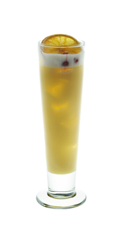

Тен оупенер — Начни свой вечер!
По аналогии с английской традицией «five o'clock tea», завсегдатаи многих баров завели традицию «10 o'clock drink». Так вот чем вечер откроешь, так его и проведешь.
Легенда коктейля
По аналогии с английской традицией «five o'clock tea», завсегдатаи многих баров завели традицию «10 o'clock drink». Так вот чем вечер откроешь, так его и проведешь.
- Как приготовить:
-
- Наполни слинг кубиками льда доверху
- Положи в шейкер 3 листика рукколы и подави мадлером
- Налей: грейпфрутовый сок 20 мл, апельсиновый сок 20 мл, сахарный сироп 22,5 мл и джин 60 мл
- Выжми четвертинку лайма
- Наполни шейкер кубиками льда и взбей
- Перелей через стрейнер и ситечко в слинг
- Распыли над коктейлем немного оливкового масла
- Укрась кружком апельсина и ягодами красной смородины